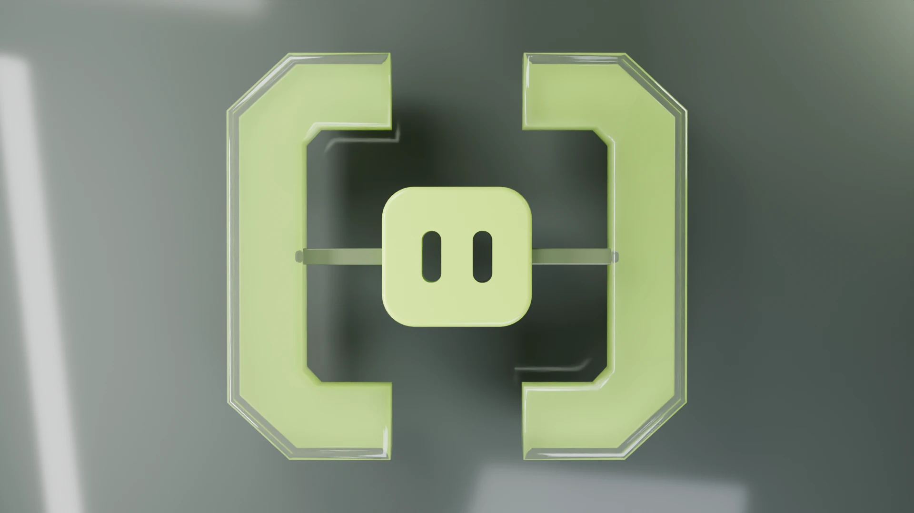
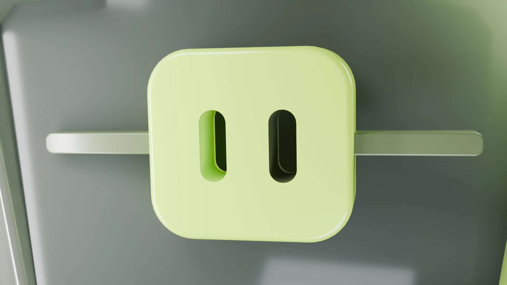
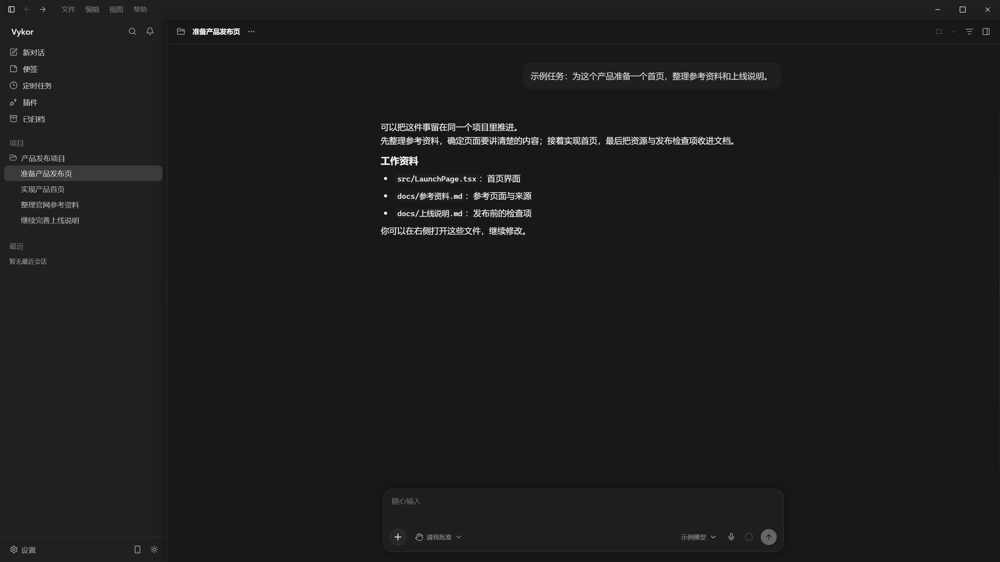
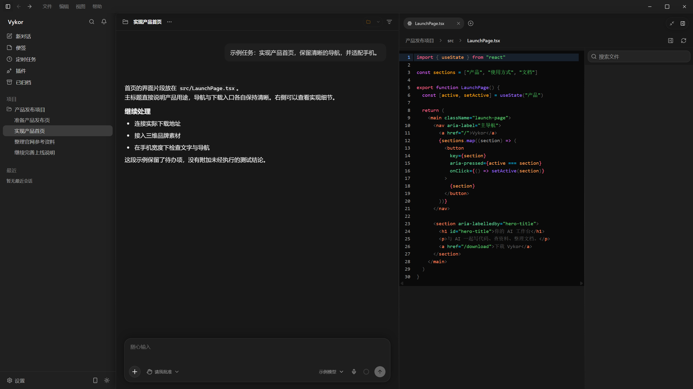
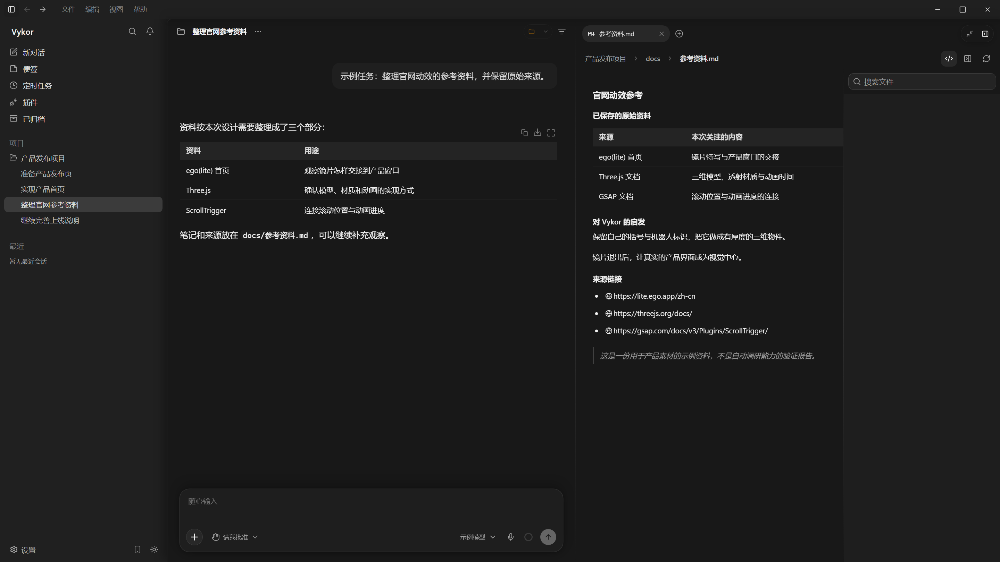
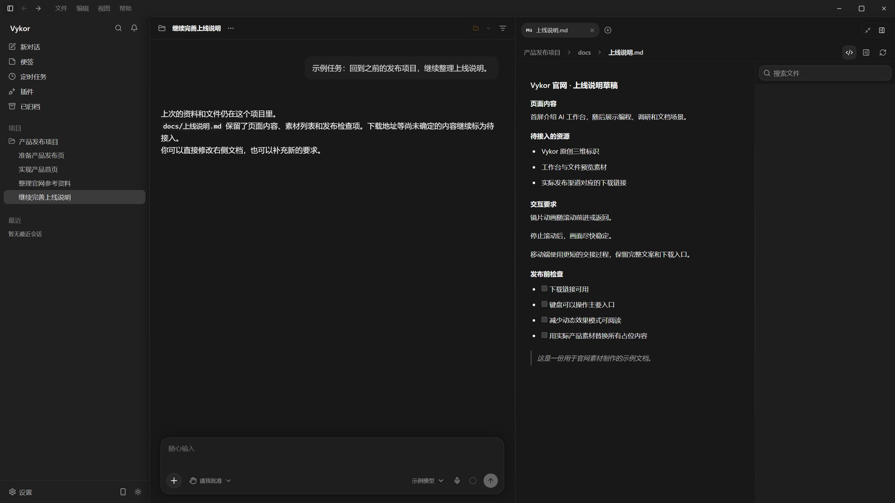

Vykor 官网素材
第一批：可编辑三维标识、四秒动画、静态备用图，以及使用实际桌面组件制作的示例界面。
三维标识
依据项目现有的括号与机器人图标重建。绿色夹层可以单独关闭，环境光可在网页中生成。

特写状态

产品场景
以下画面使用 Vykor 仓库中的真实桌面组件与样式。项目、任务和文件内容均为标注过的示例数据，未调用模型，不是实际任务执行成功的记录。
工作台

编程与文件

参考资料

文档与持续工作
